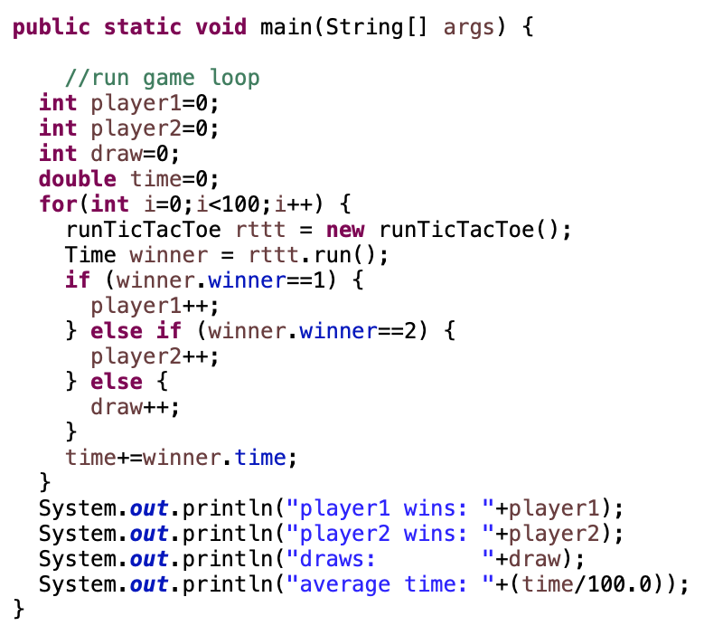
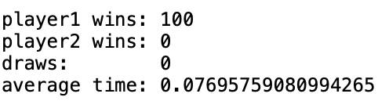
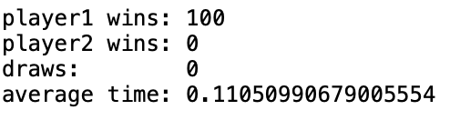
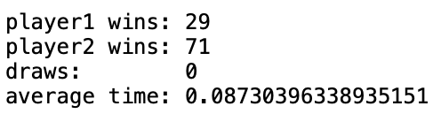

Problem Definition
For this assignment we were asked to develop AI to play a game of 4x4x4 Tic-Tac-Toe. To do so we must first understand how a 4x4x4 Tic-Tac-Toe game works and how to win. From there we must build an AI method that is able to determine the best move on the board based on the current board. By being able to do this, I will learn more about game theory and "looking ahead" when it comes to AI. This will also demonstrate how AI can be used to determine the best solution based off a given situation. We will assume that the game is played like normal Tic-Tac-Toe, but on a 4x4x4 board and there are 76 different "winning lines". I assume the difficulties will include impllementing the minimax function with alpha-beta pruning, as well as determining the best heuristic evaluation function.
Method and Implementation
The first step to solve this problem was to develop my evaluation function. After doing some research I determined that I should assign values to lines that have either 1,2,3 or 4 of a certain players pieces in a row and add those values together to get the current "value" of the board for that player. I came to use a value of 1 for 1 piece in a row, 100 for 2 pieces in a row, 1000 for 3 pieces in a row, and Integer.MAX_VALUE for 4 pieces in a row, since that meant a winning move that should trump all other moves. As well as accounting for the current position of the player, I also had to account for the opponent. For the opponent I used the value of -2 for 1 piece in a row, -110 for 2 pieces in a row, -1100 for 3 pieces in a row, and Integer.MIN_VALUE for 4 pieces in a row, since that meant a winning move for the opponent that should trump all other moves. The reason I chose these values came from some more research. First of all I discovered that for every +1 peices in a row should be at least 76x the value of the -1 pieces in a row to make sure that no matter what, +1 pieces was always a better move. The second important information I discovered was that the negative value for the opponent should be larger than the player. The reason for this was to make sure that a blocking move was always chosen first to ensure that the opponent will be blocked if they were going to win. To do all of this I made one function that retrieved all of the boards lines and then another function that got the value of each line for both the player and opponent and added them all together to get a single value for the board.
The second step was to implement the minimax and alpha-beta pruning function, which really was the main source of AI. To do this I had a main alpha-beta function for the intitial call and then a helper alpha-beta function for the recursive calls. I implemented these functions from the sudo code given from the Wikipedia page with some edits to be used for Tic-Tac-Toe. One change I made was to not only return the value of the highest node (move), but to also return the move that led to that value, which in result was the chosen move for my AI. To do this I made a very simple class called Combo that just help a value and the first move that led to that tree node. This made it very easy to determine the next move to make with all of the recursion.
After implementing these two steps, it made it very easy to finish up my AI algorithm and choose the best possible move. I also decided to only use a depth of 3 for the alphabeta pruning, but I'll get to why I came to that number later. WHoever goes fist plays a random move and then the rest of moves are determined by my AI decision making.
Experiments
I decided to run three different experiments each with 100 games. The first was my AI system with a depth of 3 against a random player with the random player going first to give them the upper hand. The second was my AI system with a dpeth of 3 against my AI system with a depth of 1 with the depth of 1 going first to give them the upper hand again. The last test was my AI system with a depth of 3 against my AI system with a depth of 3 with player 1 going first to make more sense of the results.
My metrics for my experiments include the win to loss ratio and the average speed of my AI system.
Results
For my first experiment I had great rsults. My AI won against the random player 100% of the time and had a great latency. For my second experiment my AI system won 100% of the time against against the dpeth of 1 AI player and had a fast latency, which was also a great result. For my third experiment against itself at a depth of 3, my AI had very interesting results. The starting player won 29% of the time. List your experimental results. Provide examples of input images and output images. If relevant, you may provide images showing any intermediate steps. If your work involves videos, do not submit the videos but only links to them.
You can see my results and the code that provided the results below.
Results | ||
| Experiment/Code | Image | |
| Code |  | |
| Experiment 1 |  | |
| Experiment 2 |  | |
| Experiment 3 |  | |
Discussion
Overall, like I said, my results were very good. Everything went as expected, the AI knew when to block and also knew when to win. The only thing that was a little wonky was experiment 3.It is determined that in a 4x4x4 board game the starting player can always win, but that is if they know where to start. My starting player always randomly chose the first position and the second player always made calculated decisions, which could be a reason for the second player won more than the first player. Other than that, experiment 3 went very well.
There are a few things that I would change if I had more time to work on this project. First of all I would make my code a little more efficient so that I could look 4 moves ahead. The reason why I couldn't move 4 moves ahead was because some moves took longer than the hard limit of 5 seconds, but on average they were still less than 5 seconds. To do this I would most likely try the moves that result in a higher evaluation first because that typically leads to pruning earlier on and hence speeding up the algorithm.
Conclusions
This assignment was a great way to get an understanding of game theory and minimax/alpha-beta pruning. It allowed us to implement the algorithm and figure out the best way to optimize it. Overall it was a great learning experience and made me really think about every step that I took to get my final algorithm.
Credits and Bibliography
https://en.wikipedia.org/wiki/Alpha%E2%80%93beta_pruning
https://en.wikipedia.org/wiki/Evaluation_function
https://www.youtube.com/watch?v=l-hh51ncgDI
http://www.cs.rochester.edu/users/faculty/brown/242/assts/studprojs/ttt10.pdf